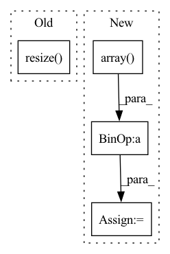

Pattern ID :28715

Before Change
image = tf.convert_to_tensor(image)
if tf.reduce_max(image) < 2:
image *= 255
image = tf.image.resize(image, input_shape, method=resize_method, antialias=resize_antialias)
if len(image.shape) == 3:
image = tf.expand_dims(image, 0)
if self.rescale_mode == "raw":
After Change
if input_shape is not None:
self.set_input_shape(input_shape)
images = [image] if len(np.shape(image)) == 3 else image
images = [np.array(Image.fromarray(image).resize(self.input_shape)) for image in images]
images = (np.stack(images) - self.mean) / self.std
images = images if backend.image_data_format() == "channels_last" else images.transpose([0, 3, 1, 2])
return functional.convert_to_tensor(images)
In pattern: SUPERPATTERN
Frequency: 3
Non-data size: 4
Instances
Fragment ID: 84612600
Project Name: leondgarse/keras_cv_attention_models
Commit Name: 2f70b0d51c8f2b1f8664f32dc75ecc1001758946
Time: 2023-01-29
Author: leondgarse@gmail.com
File Name: keras_cv_attention_models/common_layers.py
M Class Name: PreprocessInput
N Class Name: PreprocessInput
M Method Name: __call__(5)
N Method Name: __call__(5)
M Parent Class:
N Parent Class:
M File Name: keras_cv_attention_models/common_layers.py
N File Name: keras_cv_attention_models/common_layers.py
M Start Line: 586
M End Line: 601
N Start Line: 609
N End Line: 616
'>
Before Change
},
)
init_image = ds["input"]["image"][0].resize((768, 512))
output_image = ds["output"]["image"][0].resize((768, 512))
model_id = "CompVis/stable-diffusion-v1-4"
pipe = StableDiffusionImg2ImgPipeline.from_pretrained(
After Change
"/img2img/fantasy_landscape.png"
)
init_image = init_image.resize((768, 512))
expected_image = np.array(expected_image, dtype=np.float32) / 255.0
model_id = "CompVis/stable-diffusion-v1-4"
pipe = StableDiffusionImg2ImgPipeline.from_pretrained(
'>
Fragment ID: 84612592
Project Name: huggingface/diffusers
Commit Name: c727a6a5fb94deb05d3fec25d54dc42a174c9be6
Time: 2022-09-16
Author: anton@huggingface.co
File Name: tests/test_pipelines.py
M Class Name: PipelineTesterMixin
N Class Name: PipelineTesterMixin
M Method Name: test_stable_diffusion_img2img_pipeline(1)
N Method Name: test_stable_diffusion_img2img_pipeline(1)
M Parent Class: unittest.TestCase
N Parent Class: unittest.TestCase
M File Name: tests/test_pipelines.py
N File Name: tests/test_pipelines.py
M Start Line: 1143
M End Line: 1177
N Start Line: 1177
N End Line: 1211
'>
Before Change
},
)
init_image = ds["input"]["image"][0].resize((768, 512))
output_image = ds["output"]["image"][0].resize((768, 512))
lms = LMSDiscreteScheduler(beta_start=0.00085, beta_end=0.012, beta_schedule="scaled_linear")
After Change
"/img2img/fantasy_landscape_k_lms.png"
)
init_image = init_image.resize((768, 512))
expected_image = np.array(expected_image, dtype=np.float32) / 255.0
lms = LMSDiscreteScheduler(beta_start=0.00085, beta_end=0.012, beta_schedule="scaled_linear")
'>
Fragment ID: 84612598
Project Name: huggingface/diffusers
Commit Name: c727a6a5fb94deb05d3fec25d54dc42a174c9be6
Time: 2022-09-16
Author: anton@huggingface.co
File Name: tests/test_pipelines.py
M Class Name: PipelineTesterMixin
N Class Name: PipelineTesterMixin
M Method Name: test_stable_diffusion_img2img_pipeline_k_lms(1)
N Method Name: test_stable_diffusion_img2img_pipeline_k_lms(1)
M Parent Class: unittest.TestCase
N Parent Class: unittest.TestCase
M File Name: tests/test_pipelines.py
N File Name: tests/test_pipelines.py
M Start Line: 1185
M End Line: 1222
N Start Line: 1219
N End Line: 1256